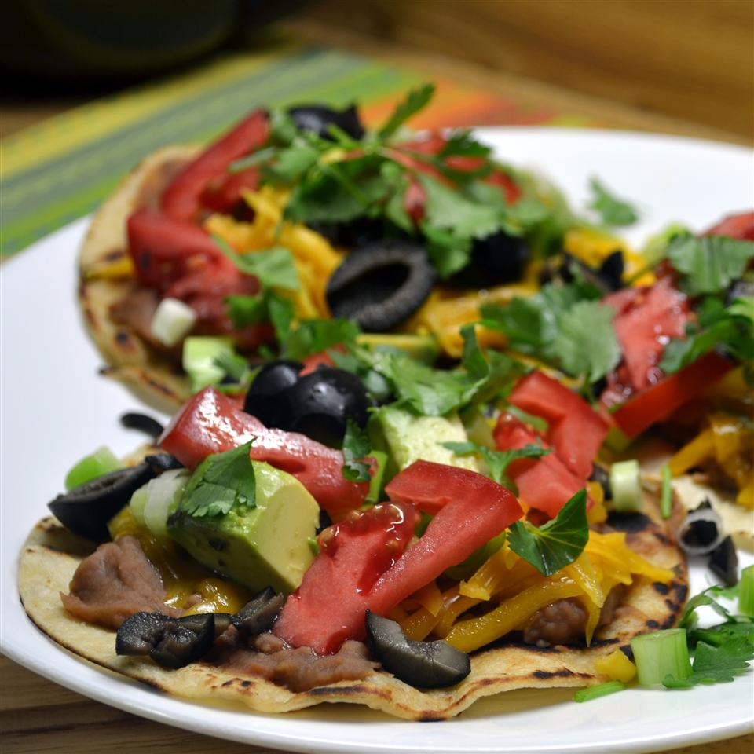

Fiesta Corn Tortilla Pizzas

Fiesta Corn Tortilla Pizzas
We all love Mexican flavors and plate-sized pizzas, so
it's a wonder this super-simple dish isn't a staple at
home or at most neighborhood Mexican restaurants. This
Oaxacan dish consists of a large tortilla that's topped
with refried beans and seared or baked, then finished with
toppings like cotija cheese, tomato, and avocado. It's different
from tostadas, which are smaller and deep-fried. Try these
Mexican-inspired Fiesta Corn Tortilla Pizzas for a true tlayuda
experience, or use the tortilla pizza inspiration for crowd-pleasing
BBQ Chicken Tortilla Pizzas.
I devised this simple snack for my Cinco de Mayo Fiesta
party years ago. An instant hit, they get gobbled up so
fast that I enlist guests and form an assembly line at the
grill, no skillet needed. Guests love being involved in the action.
Ingridients
- 1 (15 ounce) can refried beans
- 6 (7 inch) corn tortillas
- cooking spray
- 1 ¾ cups shredded Mexican cheese blend
- 3 roma (plum) tomatoes, seeded and diced
- 2 green onions, sliced
- ½ cup chopped fresh cilantro
- 1 (4 ounce) can sliced black olives, well drained
Steps
- Heat refried beans in a microwave-safe bowl in the microwave on high until warmed through, about 2 minutes, stirring after 1 minute.
- Spray both sides of each corn tortilla with cooking spray and arrange them on a wire rack.
- Heat a non-stick skillet over medium-high heat. Pan-fry one side of each tortilla until lightly browned, about 3 minutes. Return tortillas to wire rack, browned sides up.
- Spread a thin layer of refried beans onto the tortillas, stopping about 1/2 inch from the edge.
- Sprinkle Mexican cheese blend over refried beans.
- Carefully transfer a tortilla pizza back to the skillet, bean side up.
- Lightly fry until cheese begins to melt, about 1 minute more; return tortilla pizza to wire rack. Repeat with remaining pizzas.
- Scatter tomatoes, green onions, cilantro, and olives over melted cheese.
- Slice pizzas to serve.
Return to the main page
Return to top